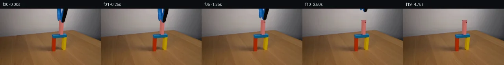

![首帧]()

Round 00
2026-11-05T09:14:51.236684+00:00像素候选变化代码 +179/−0inspection 更新
pixels 1a5ec7160e8ef550 · code 00fb834cbee0621e
查看本轮 generate.py 真实 diff
--- previous/generate.py
+++ current/generate.py
@@ -0,0 +1,179 @@
+#!/usr/bin/env python3
+"""Generate the 20-frame PixelWorld continuation using local pixel operations."""
+
+from pathlib import Path
+
+import numpy as np
+from PIL import Image, ImageDraw
+from scipy.ndimage import binary_dilation, label, shift
+
+from artifact_io import save
+
+
+ROOT = Path(__file__).resolve().parent
+HEIGHT, WIDTH = 144, 256
+
+
+def smoothstep(x: np.ndarray) -> np.ndarray:
+ x = np.clip(x, 0.0, 1.0)
+ return x * x * (3.0 - 2.0 * x)
+
+
+def wall_model(source: np.ndarray) -> np.ndarray:
+ """Fit the unobstructed wall on either side of the tool, row by row."""
+ model = source.astype(np.float32).copy()
+ sample_x = np.r_[np.arange(108, 140), np.arange(176, 208)]
+ all_x = np.arange(WIDTH)
+ for y in range(42):
+ for channel in range(3):
+ coefficients = np.polyfit(sample_x, source[y, sample_x, channel], 2)
+ model[y, :, channel] = np.polyval(coefficients, all_x)
+ return np.clip(model, 0, 255)
+
+
+def isolate_grabber(source: np.ndarray, background: np.ndarray) -> np.ndarray:
+ """Return a soft alpha matte for the grabber but not the visible pink block."""
+ src = source.astype(np.float32)
+ difference = np.max(np.abs(src - background), axis=2)
+ red, green, blue = src[:, :, 0], src[:, :, 1], src[:, :, 2]
+ visible_pink = (
+ (red > 65)
+ & (red > green * 1.30)
+ & (red > blue * 1.08)
+ & ((red - green) > 18)
+ )
+
+ roi = np.zeros((HEIGHT, WIDTH), dtype=bool)
+ roi[0:36, 140:176] = True
+ core_candidates = roi & (difference > 16.0) & ~visible_pink
+
+ # Keep only connected material that enters through the top of frame.
+ components, count = label(core_candidates, structure=np.ones((3, 3), dtype=np.uint8))
+ top_labels = np.unique(components[0, 140:176])
+ top_labels = top_labels[top_labels != 0]
+ if count == 0 or len(top_labels) == 0:
+ raise RuntimeError("Could not isolate the grabber from the first frame")
+ core = np.isin(components, top_labels)
+
+ vicinity = binary_dilation(core, iterations=2)
+ support = roi & vicinity & (difference > 4.0) & ~visible_pink
+ alpha = np.zeros((HEIGHT, WIDTH), dtype=np.float32)
+ alpha[support] = smoothstep((difference[support] - 3.5) / 16.0)
+ alpha[core & (difference > 34.0)] = 1.0
+ return alpha
+
+
+def reconstruct_clean_scene(
+ source: np.ndarray, background: np.ndarray, tool_alpha: np.ndarray
+) -> np.ndarray:
+ """Reveal wall and the few block pixels that the initial grabber occludes."""
+ clean = source.astype(np.float32).copy()
+ support = tool_alpha > 0.01
+ clean[support] = background[support]
+
+ # The complete block face is visible at y=36. Extend that per-column shading
+ # upward only into pixels uncovered by the tool, preserving every visible
+ # source pixel around it.
+ for y in range(29, 36):
+ for x in range(150, 162):
+ if support[y, x]:
+ color = source[36, x].astype(np.float32)
+ # A slight darkening toward the clamped top matches the visible
+ # upper-face samples at x=151..154.
+ color = color - np.array([(36 - y) * 0.45, (36 - y) * 0.18, 0.0])
+ clean[y, x] = color
+ return np.clip(clean, 0, 255)
+
+
… diff truncated; 92 more lines …